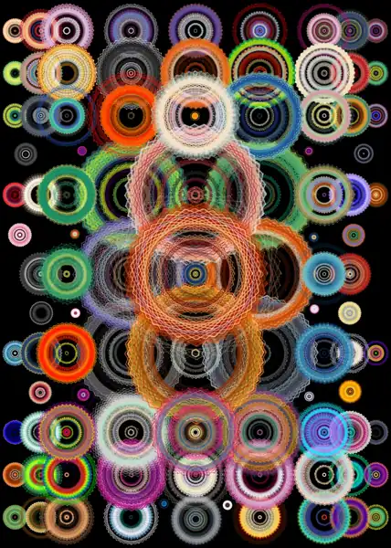

Computational intelligence
Methods for neuroimaging representation, clustering, functional connectivity and analysis of complex brain networks.
RESEARCHER · COMPUTATIONAL NEUROSCIENCE
From neural signals to digital brain models.
I develop computational methods to understand brain dynamics across scales: from electrophysiological signals and neuroimaging to mechanistic models, neural networks and brain-inspired computing.
01 / RESEARCH
Three connected lines of work, spanning algorithms, experimental signals and mechanistic modelling.
Methods for neuroimaging representation, clustering, functional connectivity and analysis of complex brain networks.
Algorithms for EEG, TMS–EEG and event-related potentials, with applications to cognitive decline and neurological conditions.
Spiking and neuromorphic networks, cerebellar circuitry, degenerative processes, resilience and personalized brain simulations.
02 / SCHOLARLY WORK
vergani_scholar.bib file. For the latest citation indicators, see Google Scholar .03 / ACADEMIC PATH
From computational intelligence and neuromorphic systems to contemporary brain modelling and neuroengineering.
Research fellow · Department of Brain and Behavioral Sciences
Cerebellar spiking models and digital brain twins in schizophrenia.Research fellow · The BioRobotics Institute, Pisa
PREVIEW and TMSpath projects: EEG, TMS and computational neuroengineering.Postdoctoral fellow · Institut de Neurosciences de la Timone
Visual cortex modelling and neural dynamics in the ANR Horizontal-V1 project.Postdoctoral fellow · Human Brain Project (NEAL)
Neuromorphic agents and spiking neural networks.PhD researcher · Computational intelligence
Functional neuroimaging, clustering and computational modelling.04 / RECOGNITION
American Physiological Society, Advances in Physiology Education, for the article on Hans Berger.
OHBM, Open Science Creations, for Berger Mandalas.
OHBM, Beautiful Mistakes, for Neural Turing Patterns.
Dynamics and Complexity workshops, Pisa.
05 / NEUROSCIENCE & ART
Scientific images transformed into visual explorations of emergent patterns, neural dynamics and the history of electrophysiology.



06 / CONNECT
For scientific collaborations, research exchange and interdisciplinary projects.